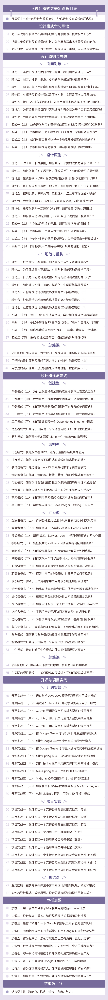

设计模式之美
你将获得
- 23 种设计模式与范式实战精讲；
- 200+ 真实案例分析设计与实现；
- 顶尖互联网公司的编程经验分享；
- 应对设计模式面试的思路与技巧。
讲师介绍
王争，《数据结构与算法之美》作者，前Google工程师，从事Google翻译、知识图谱等相关系统的开发。曾任某金融公司核心系统资深系统架构师，负责公司核心业务的架构设计和开发工作。工作十多年，干过架构、做过产品、带过团队、创过业，最后发现还是最喜欢写代码，始终没有脱离编码第一线。
课程介绍
设计模式对你来说，应该不陌生。在面试中，经常会被问到；在工作中，有时候也会用到。一些设计模式书籍，比如大名鼎鼎的GoF的《设计模式》、通俗易懂的《Head First设计模式》，估计你也都研读过。那你是否觉得自己已经掌握了设计模式呢？是否思考过怎么才算真正掌握了设计模式呢？是熟练掌握每种设计模式的原理和代码实现吗？
搞懂23种经典的设计模式，并不是件难事。你随便找本书看看就差不多了。难的是如何不生搬硬套、恰到好处地将其应用到实际的项目中。即便如此，这也并不是我们的最终目标。毕竟设计模式只是解决问题的一个方法，我们最终的目标还是要写出高质量的代码。
单纯学习设计模式，并不能让你写出更好的代码。这就像单纯地了解编程语言的语法，也不能算是会写代码一样。单纯看书，对于设计模式的掌握、代码能力的锻炼，你只能达到10%，剩下的90%还是要靠在实战中刻意练习。
而大部分工程师可能都是偏业务开发，在平时做的项目中，很少有高密度地使用各种设计模式的机会，所以这方面的锻炼肯定不多。
因此，王争结合自己过去十多年工作中积累的项目经验，为每节课、每个知识点都设计了真实的代码实例。希望用8个月的时间，通过整个专栏200多个实战案例，手把手带你高强度、刻意地练习设计模式，潜移默化地提高你的设计编码能力，教会你如何编写高质量代码，帮你跨过知识到应用的鸿沟。
一、专栏会讲哪些知识？
整个专栏以23种设计模式为核心，从面向对象、设计原则、编程规范、代码重构铺开，带你追本溯源，一次性全面掌握编写高质量代码的所有知识。下面是专栏的知识概览图。

二、专栏模块是怎么设置的？
专栏共100期正文和10期不定期加餐，分为5个模块。
学习导读部分，首先帮你明确设计模式知识的实际用途，帮你梳理最重要、最常用的7大代码评判标准，带你认识整个课程的知识框架，明确学习的任务，为后面的具体学习做好准备。
设计原则与思想部分，将为你详细讲解面向对象、设计原则、编码规范、重构技巧等基础编码知识。每一个知识点分别通过“理论篇”来精讲，通过“实战篇”带你应用，通过“总结篇”带你复习巩固。
设计模式与范式部分，将精讲23种经典设计模式，帮你搞懂每一种设计模式的原理、核心思想和应用场景，并告诉你如何避免过度设计和设计不足，一次性彻底掌握设计模式相关的所有知识。
开源与项目实战部分，将带你剖析5个常用开源框架用到的设计模式、原则和思想，并通过完整的分析、设计和实现过程，手把手带你完成3个实战项目，将学过的理论知识应用到实战中。
加餐部分，将随专栏进度不定期进行更新。这一部分将和你分享作者十多年工作中总结出的学习方法、工作心得和人生经验。
课程目录

适合人群
1.专栏中的代码是用 Java 语言实现的，但是专栏内容的讲解并不与具体的编程语言挂钩。只要你熟悉一门编程语言即可。
2.专栏重点面向偏后端的程序员，有一定项目经验会更好，没有也完全没有关系。